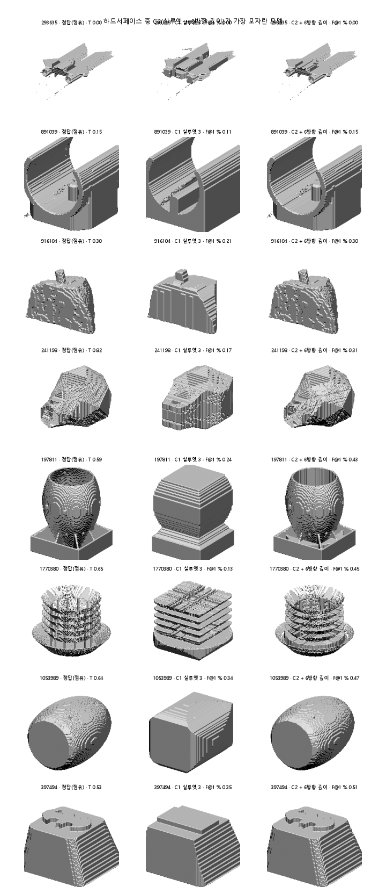
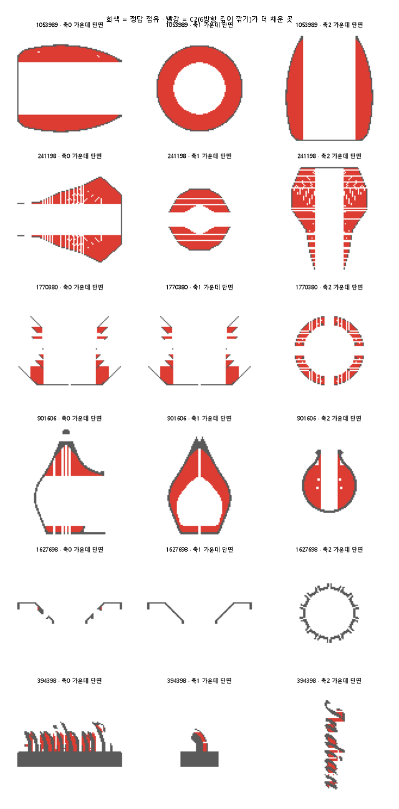
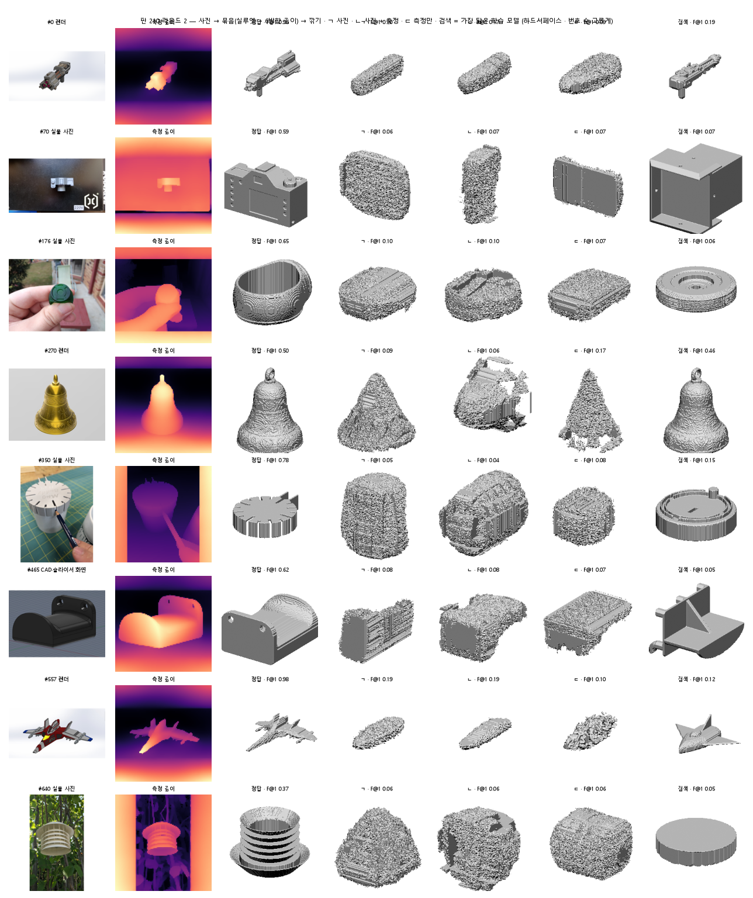
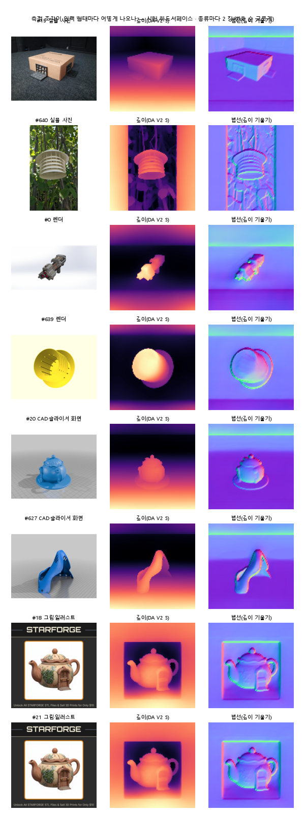

실험 m1_tr0210_h000_조합
사진 한 장에서 묶음(실루엣 + 6방향 깊이)을 배워 낼 수 있나?
판정 · 라운드 1 통과(실루엣 + 깊이) · 라운드 2 R3 · R5 실패(검색 수준)
분석
한 줄로
물음: 사진과 CAD 사이에 둘 「묶음」의 모양 부분으로, 3면도 실루엣만으로 충분한가, 6방향 깊이를 더해야 하나? 정답 조각을 그대로 넣으면 모양이 어디까지 나오나?
답: 6방향 깊이를 더해야 한다(① 통과 · 하드서페이스 F@1 % +0.27). 실루엣 + 6방향 깊이로 깎으면 이 자의 상한 가까이 나온다(② 통과 · 중앙 0.838 대 상한 0.879 − 0.05 = 0.829 · 차이 0.009 로 아슬아슬). 모자란 몫은 대부분 닫힌 속 빈 곳 · 병 속처럼 어느 축에서도 안 보이는 곳이다.
왜 이 판을 했나
11-16 사용자: 「임의의 사진 → 3면도, 3면도 → CadQuery 이게 끝」 · 「3면도는 중간에 거쳐 가는 버퍼 · 더 좋은 개념이 있을 수 있잖아」 · 「각자 장단점이 있으면 우리 상황에 맞게 데이터를 셋팅 · 3면도 + 깊이정보 이런 식으로 조합」 「여러 조합해서 테스트를 해보자고」. 조사(claudedocs/research_삼면도규약_20261116.md)에서 3면도 자체가 이득이라는 숫자는 없었고, 실사진 이득은 깊이 + 법선뿐이었다. 그래서 묶음을 조각으로 나눠, 조각마다 무엇을 담는지부터 쟀다. 학습 전에 「정답 묶음을 넣으면 어디까지」를 재야, 나중에 사진에서 예측한 묶음의 점수를 읽을 수 있다.
바꾼 것 하나
묶음의 모양 조각 조합만 바꿨다 — C1 실루엣 3 장(3면도 바깥선) → 세 실루엣 교차(hull) · C2 실루엣 + 6방향 깊이(축마다 앞 · 뒤 첫 칸) → 앞뒤 깊이 사이만 채워 세 축 교차. 정답은 tr208 정답(점유 96³ · 정답 믿음 모델 263) 그대로, 자는 표면 F@1 %(tr209 와 같은 표면 점 · 결과 · 정답 각자 경계). 단면(축당 8)은 흐름 그림에서만 보고 판정에서 뺐다(사용자 「c3 랑 c4 는 왜 필요해?」 — 필요한지는 C2 가 모자란 몫으로 안다).
결과

| 하드서페이스 130 모델 | C1 실루엣 3 | C2 + 6방향 깊이 | 도구 대조 T | 통과선 | 넘었나 |
|---|---|---|---|---|---|
| F@1 % 평균 | 0.519 | 0.790 | 0.838 | — | — |
| F@1 % 중앙 | 0.482 | 0.838 | 0.879 | ② C2 ≥ T − 0.05 = 0.829 | 통과(+0.009) |
| C2 − C1 평균(95 %) | +0.271(0.243~0.299) · p 1.7e-22 | ① ≥ 0.05 · p < 0.05 | 통과 | ||
| 부피 IoU 평균 | 0.621 | 0.929 | 1.0 | 판정 아님 | |
| C2 F@1 % < 0.8 | 49 모델 | 판정 아님 |
전체 263 모델도 같은 방향: C1 0.449 · C2 0.856 · T 0.902(중앙) · C2 − C1 +0.336. F@1 % = 결과 표면 점 중 정답 표면에서 크기의 1 % 안에 있는 몫과 그 반대 몫의 조화 평균. T = 정답 점유를 메시로 바꿔 원래 정답 메시와 같은 자로 잰 값(격자 한 칸 ≈ 크기 1 % 라 1.0 이 안 나옴 = 이 자의 상한).

왜 이렇게 나왔나
확인한 것
- 실루엣만(hull)은 오목한 곳 · 홈 · 구멍 안쪽을 다 채운다 — 흐름 #17 에서 바닥판 홈이 사라짐(부피 IoU 0.87), 전체에서 부피 IoU 0.62.
- C2 가 모자란 몫을 둘로 나눠 셌다(하드서페이스 130): T 자체가 0.8 아래인 모델 41 개(얇은 날개 · 껍질 · 가는 무늬 — 정답 점유도 못 맞춤 = 자 한계) · T − C2 > 0.10 인 모델 17 개(깊이 깎기가 진짜로 정보를 잃은 곳) · T − C2 중앙 0.024.
- 진짜로 잃은 곳은 단면으로 보니 닫힌 속 빈 곳이었다(1053989 달걀 껍질 · 1770380 탑 껍질 · 901606 병 속 · 241198) + 글자 아래 언더컷(394398). 셋 다 바깥 어느 축 방향에서도 안 보이는 곳 → 사진 한 장으로도 원래 볼 수 없다.
짐작 (아직 확인 안 함)
- 우리 대상(로봇 · 하드서페이스 · 출력용)에서는 닫힌 속을 채워도 괜찮을 것이다(굿즈 속은 차도 된다 · 09 월 결정). 다만 껍질로 설계된 부품(케이스 · 하우징)은 「속 빈 곳」 표지가 따로 필요할 수 있다.
한계
- 정답 조각을 그대로 넣은 천장이다 — 사진에서 예측한 묶음이 아니다(라운드 2).
- 자가 96³ 격자에 묶여 있다(T 중앙 0.879) · ② 는 0.009 차이로 통과라 격자를 올리면 결과가 바뀔 수 있다 — 결과를 보고 문턱을 바꾸지 않았다.
- 3면도 선(보이는 선 · 숨은선)의 값은 부피로 못 잰다 — 라운드 3(묶음 → 코드).
- 한 번만 돌림(학습 없음 · 결정적 계산이라 시드 없음).
배운 것과 다음
묶음의 모양 부분은 「실루엣 + 6방향 깊이」로 간다 — 실루엣만으로는 절반(0.48)이고, 깊이를 더하면 자의 상한 가까이(0.84 대 0.88) 간다.
- 라운드 2: 사진에서 이 묶음(실루엣 3 + 6방향 깊이)을 얼마나 맞히나 — 입력 ㄱ 사진만 · ㄴ 사진 + 측정 깊이 · 법선 · ㄷ 측정만 · 같은 망 · 같은 스텝 · tr208 시험지.
- 자의 상한(96³)을 올릴지: 6방향 깊이를 128² 로 만들면 3면도와 같은 격자가 된다.
- 껍질 부품의 「속 빈 곳」은 라운드 3 에서 코드 쪽(shell 명령)으로 볼지 정함.
분석 — 라운드 2: 사진 한 장에서 이 묶음을 맞히나 (11-17 · 묶음210.py)
한 줄로
물음: 사진 한 장에서 묶음(축마다 실루엣 + 앞 · 뒤 깊이)을 배워 낼 수 있나? 기성 추정기로 잰 깊이 · 법선을 같이 넣으면 나아지나?
답: 못 낸다 — 세 입력 모두 검색(가장 닮은 학습 모델을 그대로 내놓기)과 같은 수준이다(하드서페이스 F@1 % 0.10~0.11 대 검색 0.116 · 정답 묶음 천장 0.684). 측정 깊이 · 법선을 넣어도 그대로였다(R3 실패 · +0.003 · p 0.67). 검색도 못 이겼다(R5 실패). 예측은 대략의 크기 · 비율만 맞춘 부스러기 덩어리다.
왜 이 판을 했나
라운드 1 에서 묶음의 모양 부분은 「실루엣 + 6방향 깊이」로 정했다(정답을 넣으면 천장 가까이). 이제 A(사진 → 묶음)가 그걸 사진에서 낼 수 있는지, 조사에서 실사진 이득이 유일하게 숫자로 확인된 「깊이 + 법선」(CADCrafter)이 우리 쪽에서도 도움이 되는지를 물었다. 사용자 「1하고 2하자고」(출력은 모양 부분만 · 입력 셋).
바꾼 것 하나
입력만 셋으로 바꿨다 — ㄱ 사진(RGB → DINOv2) · ㄴ 사진 + 측정 깊이 · 법선(Depth Anything V2 Small · 법선은 깊이 기울기 · 112² 조각 임베딩을 DINOv2 패치 토큰에 더함 · 0 으로 시작) · ㄷ 측정만(법선 그림 → DINOv2 + 깊이). 나머지는 같다: tr184 망(DINOv2-base 얼림 · 디코더 4 층) · 출력 면마다 3 채널 · 손실 축 돌림 24 중 최소 · 원화CAD짝 학습 사진 11,992(모델 5,497) · 6,000 스텝 · 검증 손실 최소 무게 · 시험 tr208 정답 믿음 583 장.
결과

| 하드서페이스 278 장(모델 132) · F@1 % 평균(95 %) | 값 | 대조 | 통과선 | 넘었나 |
|---|---|---|---|---|
| ㄱ 사진 | 0.110(0.10~0.12) | 검색 0.116 · 공 0.026 · 천장 0.684 | — | — |
| ㄴ 사진 + 측정 | 0.113(0.104~0.122) | ㄴ − ㄱ +0.003 · p 0.67 | R3 ≥ 0.03 · p < 0.05 | 실패 |
| ㄷ 측정만 | 0.102(0.094~0.108) | ㄷ − ㄱ −0.009 · p 0.08 | 판정 아님 | — |
| 최선(ㄴ) − 검색 | −0.003 · p 0.006 | R5 > 0.02 · p < 0.05 | 실패 | |
| 무너짐(예측 · 정답 다양성) | ㄱ 0.49 · ㄴ 0.47 · ㄷ 0.45 대 0.63 | < 정답 × 0.5 | 아님 |
F@2 % 는 ㄱ 0.283 · ㄴ 0.290 · ㄷ 0.270 · 검색 0.278 · 천장 0.957. 전체 583 장도 같은 순서(ㄱ 0.114 · ㄴ 0.113 · ㄷ 0.107 · 검색 0.118). 입력 형태별(하드서페이스 ㄴ): 실물 사진 0.110 · 렌더 0.129 · 화면 0.107 · 일러스트 0.068(12 장).

왜 이렇게 나왔나
확인한 것
- 세 변형 모두 검증 손실이 2,000~3,000 스텝에서 바닥(ㄱ 0.7115 · ㄴ 0.7113 · ㄷ 0.754)을 찍고 그 뒤로는 학습 손실만 내려갔다(6,000 스텝 학습 0.40 · 검증 0.73) — 학습 사진을 외우고 새 사진으로는 안 넘어간다.
- 비교 그림: 예측은 크기 · 길쭉함 · 둥긂 정도만 맞고(총 · 비행기 = 길쭉한 알 · 반지 = 납작한 원판 · 종 = 원뿔), 깊이가 화소마다 흔들려 깎으면 표면이 부스러기가 된다. 검색은 모양은 깔끔하지만 다른 물건을 고르면 끝(카메라 → 상자).
- 측정 깊이 · 법선 자체는 물체를 배경에서 잘 떼어 낸다(그림) — 그런데 그 정보를 넣은 ㄴ 이 ㄱ 과 같았다.
짐작 (아직 확인 안 함)
- 측정을 넣는 방식이 약했을 수 있다: 0 으로 시작한 조각 임베딩을 얼린 DINOv2 토큰에 더하기만 했고, 6,000 스텝 중 2,000~3,000 에서 외우기로 넘어가 측정 쪽 무게가 거의 자라지 않았을 수 있다(측정 임베딩 크기를 안 열어 봄).
- 데이터가 작다: 모델 5,497 개 · 사진 11,992 장으로 「사진 → 뒷면까지 든 6방향 깊이」를 배우기엔 적고, 그래서 검색과 같은 「닮은 것 평균」 수준에서 멈췄을 수 있다.
- 부스러기는 화소마다 따로 내는 깊이(16² 조각 디코더) 탓일 수 있다 — 깊이를 매끈하게 하는 손실이나 거친 → 고운 출력이 없다.
한계
- 자의 상한: 표면 점 1 만 개라 F@1 % 문턱(크기 1 %)이 점 간격에 가까워 천장이 0.684 다(라운드 1 은 2 만 개로 0.79) — 길끼리는 같은 자라 비교는 공정하지만 절대값은 낮게 나온다. 결과를 보고 점 수를 바꾸지 않았다.
- 한 번만 돌림(시드 하나) · 학습 사진은 원화CAD짝 하나(생성기 렌더 안 씀) · 법선은 깊이 기울기(전용 법선 추정기 아님).
- PC 가 꺼져 학습 ㄱ 을 처음부터 다시 돌렸다(이어하기를 넣음 · 절차는 같음). 학습 전 시험 채점이 학습 중이던 ㄱ 무게를 집었지만, 마지막 채점은 끝난 무게로 다시 쟀다(천장 · 공 · 검색만 다시 씀 — 무게와 무관).
배운 것과 다음
사진 → 묶음은 지금 방식으로는 검색 수준(F@1 % 0.11 · 천장의 6 분의 1)에서 멈추고, 측정 깊이 · 법선을 더해도 안 움직인다. tr184(사진 → 3면도 선)도 같은 덩어리였다 — 이 방식으로는 사진 → 3면도가 학습되지 않는다.
제 실수 둘: 조사 뒤 「깊이 + 법선(나 · 라)이 유력」 이라 했는데, 근거(CADCrafter)는 물체당 4 장 · 단순 돌출 부품 · 보이는 면 위주라 우리 조건(한 장 · 뒷면까지 · 다양한 물체)과 셋 다 달랐다. 「데이터가 작다」 도 근거 없는 짐작이라 거둔다(사용자 11-17 「니 예측대로 데이터를 더 넣으면 잘 나온다메? 처참한 수준인데」 「이 정도면 원화 → 삼면도 자체가 학습이 안 되는 수준」).
다음은 고치기가 아니라 가설 검정(사용자 11-17 「해보자고」 · H0 부터): | 가설 | 내용 | 가르는 시험 | 비용 | |---|---|---|---| | H0 문제 자체 | 사진 한 장 → 다른 방향 모습은 이 시험지에서 학습으로 원래 안 풀린다 | 큰 데이터(수십만)로 이미 학습된 사진 → 3D 생성 모델을 tr208 하드서페이스 사진에 넣고 같은 자 · 검색과 비교 | 학습 없음 | | H1 기준 방향 | 물체 기준 틀(앞을 사진에서 추론)이 원인 | 같은 망을 사진 기준 틀로(자세를 아는 렌더 필요) | 학습 1 번 | | H2 평균 내는 회귀 | 보이는 면은 맞는데 뒷면만 덩어리 | H1 을 보이는 면 · 안 보이는 면으로 나눠 채점 | H1 에 붙임 | | H3 데이터 양 | 늘리면 외우기가 늦어지고 오른다 | 반 · 전부 곡선 | 가장 비쌈 · 마지막 |
판 기록
- 라운드 1: 통과선 커밋 9f30544(돌리기 전) · 코드
원화3d/실험_20261013/캐드부품/조합210.py· 모델별 결과out/설명/캐드부품/모델210/잼_모델별.json(git 밖) · 판정 원문잼.json· 흐름 그림흐름.png(예 #17 · 단면 다수결 등 라운드 1 전 탐색 포함) - 라운드 2: 통과선 커밋 5b4b8e7(학습 전) · 이어하기 6d12183 · 14aff3a(문법 고침) · 채점 다시 쓰기 3f59d8f · 코드
묶음210.py· 판정 원문잼2.json· 곡선곡선_ㄱ · ㄴ · ㄷ.json· 고른 무게고름_*.json· 묶음out/설명/캐드부품/모델210/묶음.npy(6,089/6,091 · 실패 2 는 학습 모델 · git 밖) · 측정깊법.npy· 예측예측_*.npy· 사진별잼2_사진별.json(git 밖) - 묶음 만들기: ex.map 은 큰 메시 하나의 MemoryError 로 124 개에서 끊김 → 모델179.병렬 · 200 개마다 저장 · 실패는 일꾼 1 로 다시 · 묶음 → 깎기 보기로 모양 확인(
묶음깎기보기.png)